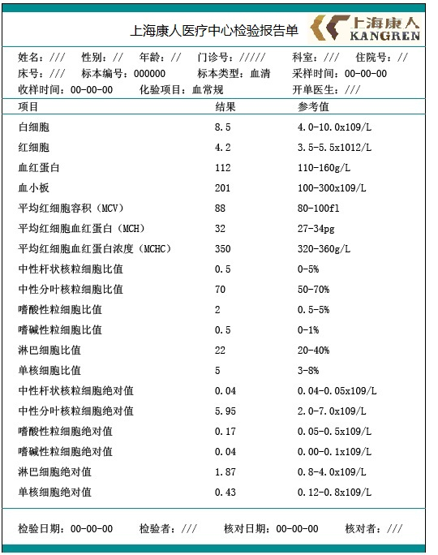
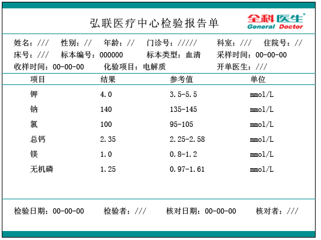
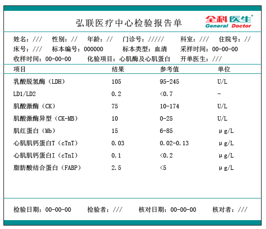
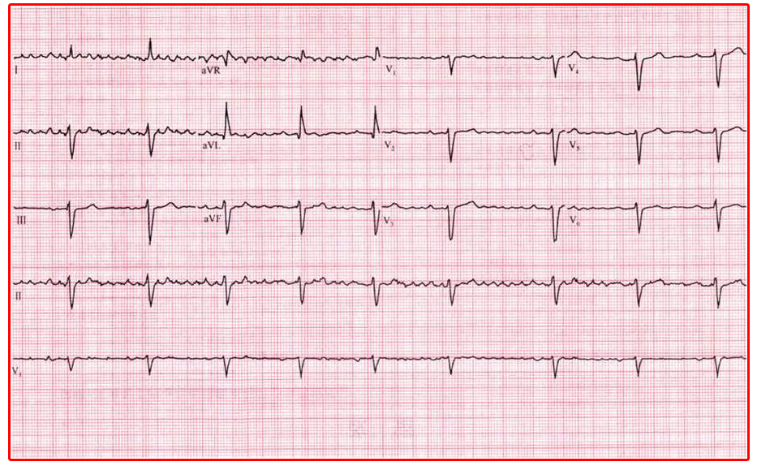
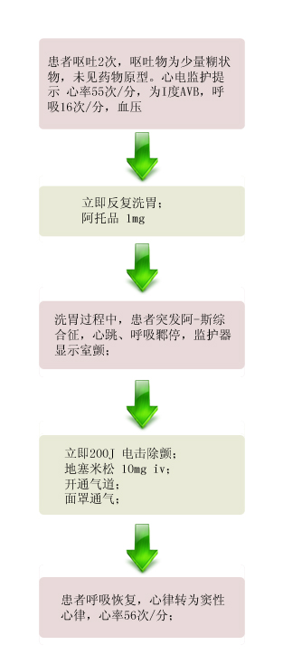

【病例摘要】
- 现病史：患者女性，22岁，与男友发生争吵而服用心律平50片（每片剂量50mg），服药后半小时感头晕、乏力、心悸、气急、胸闷，全身不适。一小时后上述症状明显加重。
- 既往史：既往体健。否认肝炎、结核等病史。否认药物、食物过敏史。
- 查体：P 16次/分，R 55次/分，BP 90/50mmHg，意识模糊，呼之能应，痛苦状，两侧瞳孔等大同圆，对光反射迟钝，双肺呼吸音清，未及明显干湿啰音，心率55次/分，律齐，未及异常心音及心脏杂音。腹软无压痛。四肢肌力差，病理征未引出。

【辅助检查】
- 血常规:
 - 电解质:
 - 心肌酶谱:
 - 心电图:

【诊断】
- 心律平中毒
【事件】
